PagerDuty  |  UI • UX • Web App
Adding Context When It Matters Most
(Part 1)
PagerDuty  |  UI • UX • Web App
Adding context when it matters most


Overview
view project
Overview
PagerDuty is an incident management platform that provides reliable notifications, automatic escalations, and other functionality to help teams detect and fix infrastructure problems. As the primary designer for the Dependencies Visualization project, I was responsible for designing the UX, conducting user research, and working closely with engineers to build, iterate on, and ship features.
Time: 2020
Duration:  4 weeks
Team: Core : 1 PM, Me
‚ÄçAdditional : 1 data scientist, 3 engineers, 1 EM, 1 design lead
Tools:  Figma, Usertesting.com, Confluence
Duration:  4 weeks
Team: Core : 1 PM, Me
‚ÄçAdditional : 1 data scientist, 3 engineers, 1 EM, 1 design lead
Tools:  Figma, Usertesting.com, Confluence
Milestone 1

Problem: Pinpointing the source of an active incident is an opaque process
Responders—especially those newer to the org—lose hours trying to figure out whether the issues they are seeing originated somewhere else. They also worry that the incident on their service may be causing issues on another team's service.
PagerDuty identified two key milestones they wanted to be addressed. This case study covers the first; to learn about the second, click
here.
view project
As an organization scales, it becomes difficult to understand how infrastructure is connected. When this isn’t understood or documented by employees, it can result in complex, cross-cutting incidents that are incredibly difficult to address or unravel during incident triage.
Solution: More relevant info, faster resolutions
Most of the time, an incident on one service causes an incident on a related or dependent service. Responders need to know this information, so they can move quickly and take the right actions to resolve an issue. The focus of the first milestone was to aid on-call teams by:
- Equipping them with context about active incidents on related services
- Forewarning them of an impending incident on their service
- Allowing the team to make adjustments before the incident affects their service
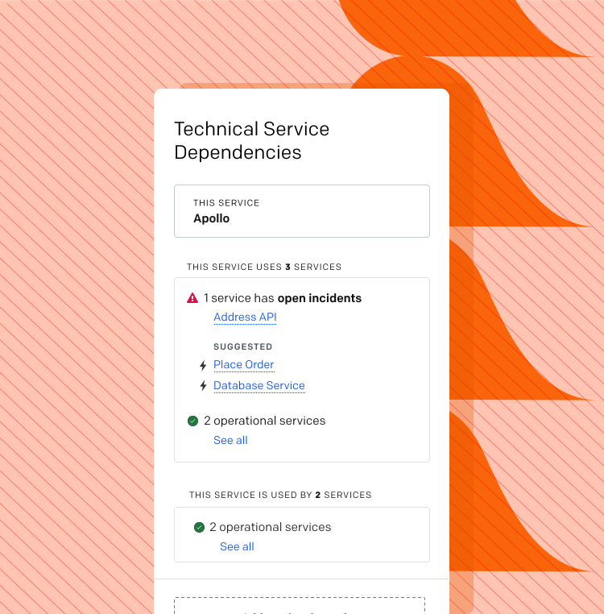
Uncovering Underlying Challenges
On its face, PagerDuty may seem like just a tool for alerting engineers when something's wrong. At its core, however, PagerDuty is focused on giving teams the context and tools to more quickly resolve technical issues. That’s easier said than done, as finding the root cause of an issue can be challenging and time-consuming, particularly when it's an incident a responder is seeing for the first time. 
Responders can only effectively work through incidents if they’re able to identify relevant relationships between issues. There are a few reasons why this doesn’t always happen.
view project
Rising complexity = what’s connected to what?
It can be hard for employees to understand how infrastructure is connected, which can lead to potential vulnerabilities or complex, cross-cutting major incidents that affect the system as a whole.
Rapid evolution = where’s the documentation?
Technical infrastructure is constantly evolving to meet the needs of the company—and documentation doesn’t always keep up, which makes it hard for responders to understand the greater technical environment.  
New personnel = what don’t I know?
Personnel turnover is inevitable across teams, and yet most teams rely primarily on tribal knowledge about how to resolve incidents or what actions should be taken to identify the root cause of an issue. New employees don’t know what they don’t know and, as a result, may miss things as they work to resolve incidents. 
Communication = who do I ping?
Despite an abundance of communication tools these days, teams are often unsure of who to loop into the communication, and other members are often brought in only through chance (i.e., they talked to a team that was experiencing a particular issue).  
Understanding the Target User
While PagerDuty has a diverse group of users, this project’s focus was on the user group that experiences the most on-call pain: newer engineers to the team. These users often have limited knowledge of how their team’s service is connected to the overall infrastructure, which makes identifying the root cause of an incident more challenging.
view project
Morgan, the Newest Engineer
“This documentation seems out of date"
Key Callouts
- New to the company with no experience being on call 
- Not familiar with the deployment pipeline
- Possesses little to no tribal knowledge
- Unfamiliar with the holistic ecosystem
Understanding the Situational Context
While PagerDuty has a diverse group of users, this project’s focus was on the user group that experiences the most on-call pain: newer engineers to the team. These users often have limited knowledge of how their team’s service is connected to the overall infrastructure, which makes identifying the root cause of an incident more challenging.
view project
Your Third On-Call Experience
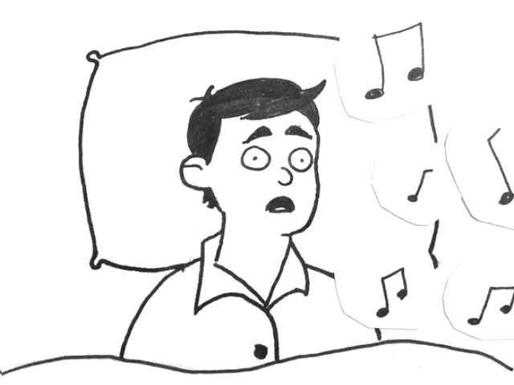
It's the middle of the night and you're woken up by a page to your phone from PagerDuty.
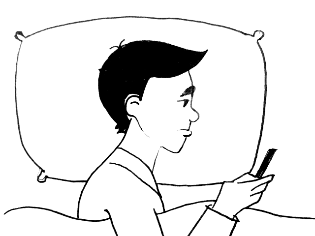
You log into the PD mobile app to acknowledge the incident to avoid getting additional notification.
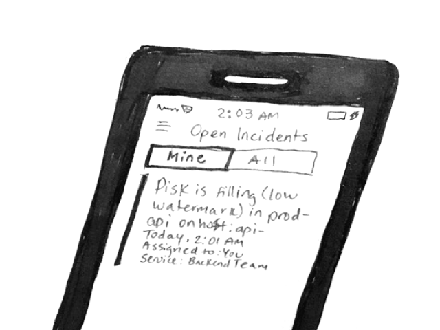
While in the app, you read the incident title. This is only your second on-call shift and you haven't seen this incident before causes you some concern and confusion.
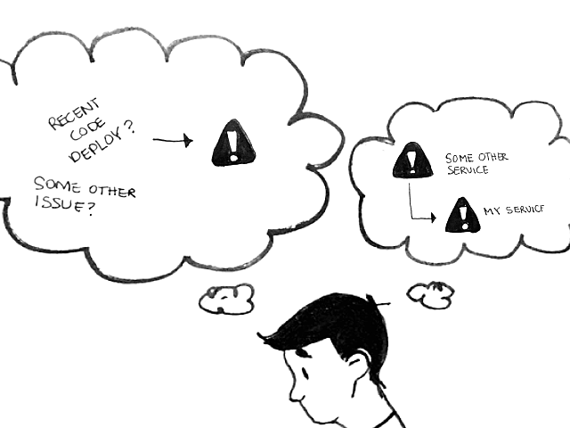
As you read through the incident details, the pressing question on your mind is whether or not the root cause of this incident stem's from your service or someone else's?
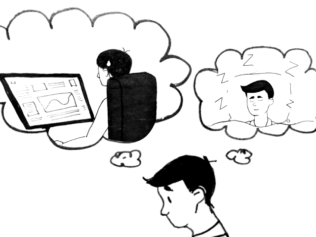
If the issue stems from your own service, you'll be responsible for resolving this unfamiliar issue. If the issue stems from another service, your service's issue will likely auto-resolve once the root cause has been fixed (by some else).
But how and where can you quickly find the information you need to confirm if the issue you're seeing is your problem or someone else's?
Visual storytelling for the on-call experience
The example above is one of "wartime", the mode of operation that occurs when systems are not normal. I wanted to keep this in mind and design the most optimal experience I could for the most stressful situation PagerDuty responders may experience.
Framing Ideation & Factoring in Constraints
I used the information I’d gathered from both quantitative and qualitative research and a one-page product brief given to me by the company to craft a more targeted problem statement. I then translated it into the following “How might we…” (HMW) question, which I used to think through various tactical approaches to solving the challenge.
How might we surface relevant information about service dependencies to responders during wartime?
Responders need these relevant relationships to be highlighted during triage so they can avoid dead ends, collaborate quickly, and take the correct actions to resolve issues. I also made sure to factor in constraints early in my design process:
- Limited real estate: There was a limited amount of space available on a page chock-full of information and features.
- Limited time: The deadline for launch—before PagerDuty’s annual summit—was tight, which meant the design and implementation process needed to move fast.
Understanding Success Metrics
With a clear understanding of the problem, it was important to then establish success metrics for the solution. These goals helped us make design decisions quickly throughout the fast-paced design and development cycles and ensure that my design met the company’s intended outcomes. 
Top success metrics:
- Reduce how long it takes to resolve an incident: The ultimate goal of this project was to decrease MTTR (Mean time to resolve incident) by helping the customer identify the root cause faster
- % Engagement with service dependency data displayed: % of people that click on any of the links displayed related to the services
- % of accounts that add dependencies: % of people that add dependencies overall
Why these metrics matter: Less time resolving incidents means improved employee productivity and satisfaction, while higher engagement indicates that users are getting value from the feature. Additionally, accounts that add dependencies are 37% more likely to expand their account with PagerDuty. (Ka-ching! ü§ë)
view project
Prioritizing Value-Adds by Defining Users’ Goals
Data from existing research and the product one-pager helped me identify high-priority actions users like Morgan would want to take while triaging from the Incident List page. The job stories were converted into user flows to illustrate how potential users could interact with the product to successfully resolve incidents in (hopefully) less time.
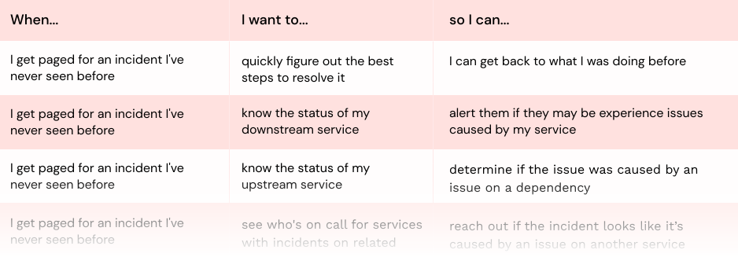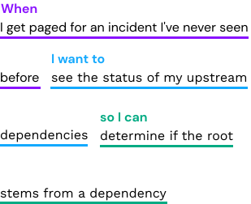
Example of job stories created
Exploring Potential Design Solutions
Visual hierarchy of services dependencies was a key focus for this project; the idea was that visually communicating a service’s position in relation to other services would help responders grasp impact faster and more often. I considered options to quickly communicate where a service sat when it came to its upstream and downstream services. I also explored how to best utilize the small real estate and employ the accordion to show and hide relevant information.
view project

Sample from more than 30 early explorations
Key Insights üí°
Share designs and start collecting feedback early
I made an effort to reach out individually to folx from product management, engineering, and the design team before testing began. Getting feedback at an early stage allowed me to iterate before my target users saw the design; it also highlighted some new questions I wanted to ask users during testing.  
I made an effort to reach out individually to folx from product management, engineering, and the design team before testing began. Getting feedback at an early stage allowed me to iterate before my target users saw the design; it also highlighted some new questions I wanted to ask users during testing.  
Design Direction Validation
While there was some existing research around the type of information users wanted when looking at services dependencies during wartime, knowledge gaps remained. I looked at testing as an opportunity to learn more about user behaviors and expectations. In summary, my primary objectives were:
- Validate what pieces of information responders would find most useful
- Gauge how quickly users grasped new concepts
The PM and I worked closely to conduct six usability tests ranging from 30 to 45 minutes among engineers with different on-call experiences. These remote tests were critical in gathering feedback that informed the revisions to key action items, which are summarized below:
view project
Shifting focus to what’s important
Due to the distracting service name card, the user had a hard time focusing on the most important information: the status of dependencies. I removed the card completely to help users more quickly navigate to the items requiring attention, such as services with open incidents. 


Communicating information at a glance
I realized the cluttered page was competing for responders' attention, so I changed the background to intuitively signal the status of service dependencies. For example, a red background indicated that 1+ dependencies had open incidents, while green indicated that all dependencies were operational.
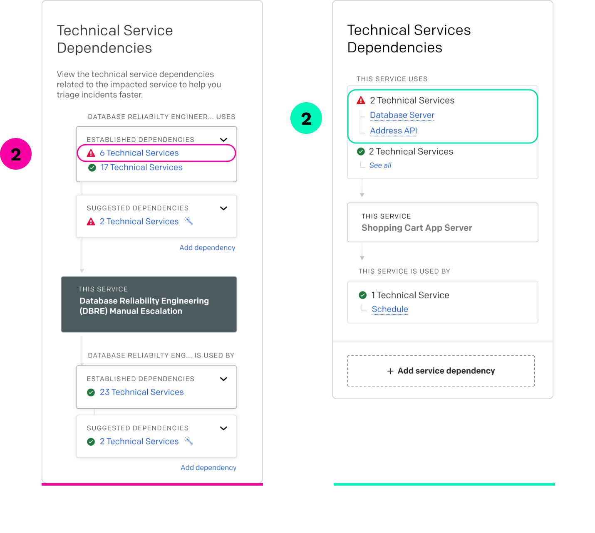
Reducing clicks to get context
To make it easier for responders to learn what dependencies were affected, I removed the click previously required to find that info. Now they can start to identify the source of the incident they’re investigating without unnecessary extra steps.
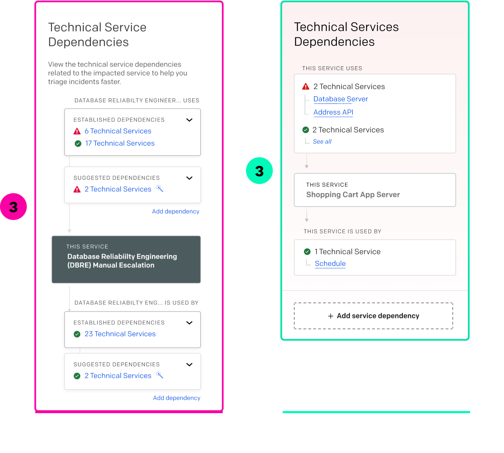

Key Insights üí°
Designing for a future state
I knew suggested dependencies were the focus of the second milestone, so I kept that in mind as we worked toward completion of the first. I wanted to be proactive and minimize the risk of a redesign, so I tested those designs and gathered feedback before the second project kicked off. 
 
During testing, I learned that group responders preferred defined and suggested information grouped together so they wouldn't have to look in separate places for related data.
I knew suggested dependencies were the focus of the second milestone, so I kept that in mind as we worked toward completion of the first. I wanted to be proactive and minimize the risk of a redesign, so I tested those designs and gathered feedback before the second project kicked off. 
 
During testing, I learned that group responders preferred defined and suggested information grouped together so they wouldn't have to look in separate places for related data.
Milestone 2
To Be Continued...
Because the two milestones were being worked on simultaneously, there was not a clear delineation between them. Even as we moved into Milestone 2, we continued to uncover changes that needed to be made for Milestone 1. To learn about the final product, click here or the button below.
Milestone 2
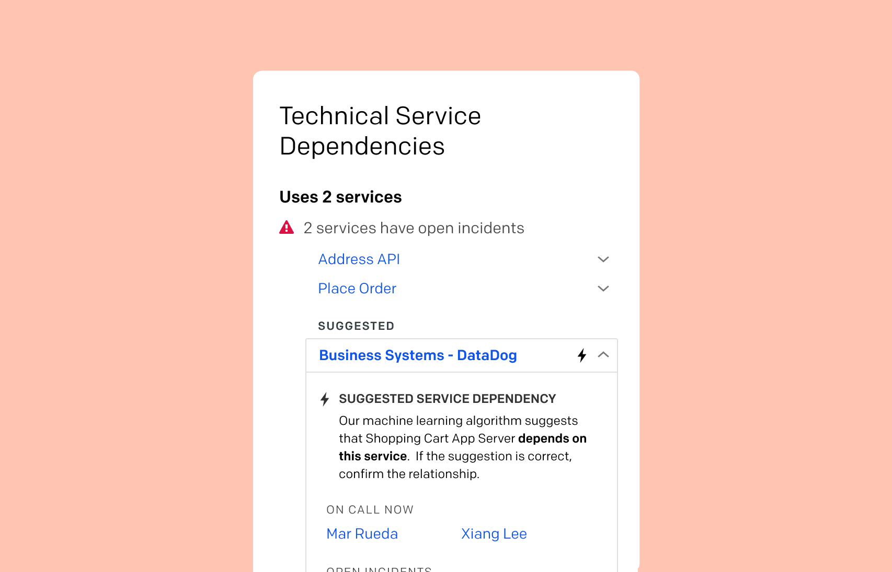
view project